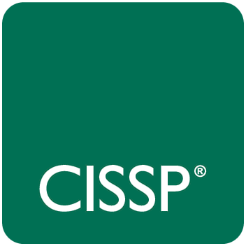
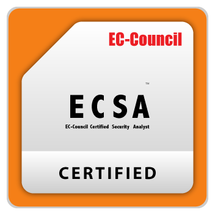
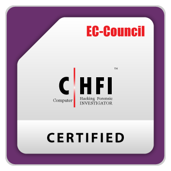
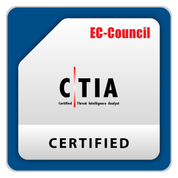
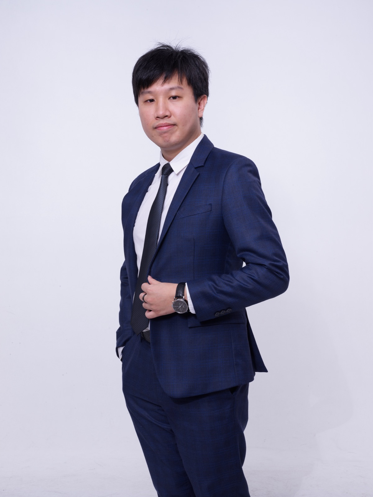
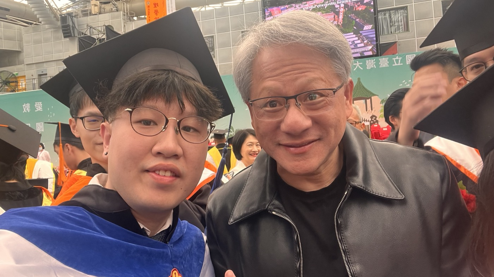

01
資安技術分享
弱點分析、系統防護、白帽實務、安全治理、雲端與應用安全架構，寫給想真正理解安全的人。
# White Hat # Security Engineering # Governance

我是 Dr.William，爍雲科技共同創辦人、維域智慧共同創辦人、台大資訊工程博士，也是白帽駭客與系統治理實踐者。這裡記錄我一路走過的技術拆解、創業思考，以及 AI 逐漸進入日常後的互動生活觀察。






從白帽駭客、系統治理到實際落地架構，我用可執行、可驗證、可持續維運的角度談技術，而不是只談概念。
把公司成長、提案思考、產品打磨、組織協作與市場判斷，寫成一份對技術創業者有幫助的長期筆記。
我關注的不只是模型能力，而是 AI 如何真正進入生活、互動、陪伴與工作流程，並帶來新的感受與選擇。
這裡記錄 Dr.William 從研究、資安、系統治理、醫療資訊到 AI 實踐與創業的歷程，整理每一段跨域整合、產品思考與落地推進背後的關鍵經驗。
從學術研究到產業落地，從系統安全到 AI 應用治理，建立一個既懂技術深度、也懂商業場域與產業需求的跨域角色。
結合情感 AI 角色、醫療資訊治理、智慧資料交換、資安治理與系統整合，走向更完整的 AI 服務與專業解決方案。
在台大畢業的重要時刻，Dr.William 不僅與 NVIDIA 執行長黃仁勳留下合影，也由黃仁勳親自頒發畢業證書。這不只是紀念畫面，更是學術歷程與科技視野交會的珍貴里程碑。


以個人品牌為核心，建立三條能長期累積內容影響力的主軸。
弱點分析、系統防護、白帽實務、安全治理、雲端與應用安全架構，寫給想真正理解安全的人。
從品牌建立、產品落地、AI 協作到市場實驗，持續記錄創業路上每一段真實推進的過程。
記錄 AI 如何走進工作與日常，從工具到夥伴，慢慢改變決策、創作與生活節奏。
無論你是工程師、創業者、研究者、醫療資訊推動者，或只是好奇 AI 將如何改變生活的人，都歡迎從這裡開始交流。